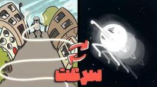

اگر سرعت نور و صدا با هم عوض شود چه میشود؟

تصور کن در دنیایی هستی که صدا آنقدر تند میرود که پیش از تمام شدن حرفت، آن سر دنیا هم شنیده است. یا دنیایی که نور آنقدر کند است که ستارهها را نه به شکل امروز، بلکه به شکل میلیونها سال پیش میبینی. موضوع همین است: اگر سرعت نور و صوت با هم جابهجا شود چه میشود؟
یعنی صدا با حدود ۳۰۰ هزار کیلومتر بر ثانیه برود و نور فقط با ۳۴۳ متر بر ثانیه. آن وقت اصلاً میشود حرف زد یا دید؟ اینترنت و ارتباط چه میشوند؟ تکامل از اول تا امروز چه شکلی پیش میرفت؟
اول دو عدد آشنا
سرعت نور در خلأ دقیقاً ۲۹۹۷۹۲۴۵۸ متر بر ثانیه است؛ معمولاً میگوییم حدود ۳۰۰ هزار کیلومتر بر ثانیه. این بالاترین سرعتی است که در جهان میشناسیم. سرعت صدا در هوا و در دمای حدود ۲۰ درجه سانتیگراد تقریباً ۳۴۳ متر بر ثانیه است. در آب یا فلز بیشتر میشود، ولی در هوا همین حدود است.
حالا فرض کنیم سرعت صوت به سرعت نور برسد؛ به جای ۳۴۳ متر بر ثانیه، ۳۰۰ هزار کیلومتر بر ثانیه.
حرف زدن چه شکلی میشود؟
هر روز با موج صوتی سر و کار داریم و به آن فکر نمیکنیم، چون برایمان بدیهی است. موج صوتی نوسانی است که در هوا یا هر محیط دیگری پخش میشود. اگر سرعت صوت به سرعت نور برسد، طول موج خیلی بزرگ میشود. برای صدای ۱۰۰۰ هرتز، طول موج حدود ۳۰۰ کیلومتر میشود. یعنی هر موجی که تولید شود صدها کیلومتر کش میآید.
صداهایی که میسازیم به جای اینکه مثل حالا واضح و دقیق باشند، خیلی پراکنده و درشت میشوند. در حالت عادی تارهای صوتی نوسان میکنند تا صدا بسازند؛ ولی این موجها آنقدر بزرگ میشوند که تشخیصشان سخت است. حتی اگر صدا تولید شود، گوش ما برای این مقیاس ساخته نشده. پس حرف زدن به شکلی که میشناسیم خیلی سخت یا حتی نشدنی میشود.
حنجرهٔ انسان از اول برای طول موجهای کوتاه همین هوا ساخته شده، نه برای موجی به اندازهٔ یک استان.
اگر سرعت صوت اینقدر زیاد شود، حتی یک تکان کوچک هوا میتواند موجی عظیم بسازد و انرژی زیادی را با خود ببرد. یک سلام با فرکانس ۱۰۰۰ هرتز حدود ۳۰۰ کیلومتر طول دارد؛ یعنی از تهران به سمت اصفهان کش میآید. گوش ما برای فرقهای میلیمتری فشار هوا ساخته شده، نه امواجی به اندازهٔ کوه. صدای انسان احتمالاً شبیه نویز سفید بیمعنی میشد و انرژی همان پچپچ میتوانست شیشهٔ شهر را بلرزاند.
اینترنت و ارتباط
امروز اطلاعات با موج الکترومغناطیسی میرود؛ رادیو، نور در فیبر، و حجم عظیمی از داده در کسری از ثانیه. اگر سرعت صوت به سرعت نور برسد، شاید کسی بخواهد با خود صدا پیام بفرستد. اما هر موج صدها کیلومتر بزرگ و پراکنده است و جدا کردنش تقریباً نشدنی میشود.
اینجا سیستمهای ارتباطی ما به شدت به هم میریزند؛ فیبر نوری بیمعنا میشود و موج رادیویی عملاً بیفایده، و باید راه کاملاً تازهای برای فرستادن پیام پیدا کنیم.
بدنها جور دیگری رشد میکردند
اگر سرعت صوت اینقدر زیاد میبود، شنیدن و صدا ساختن در موجودات زنده کاملاً عوض میشد. شاید موجوداتی پیدا میشدند که با فرکانس خیلی پایین حرف بزنند، یا اصلاً از صدا دست بکشند و با لرزش زمین و تغییر فشار پیام بدهند.
گوشها ممکن بود ناپدید شوند و به جایش اندام حساس به لرزشهای بزرگ بیاید. پردهٔ گوش باید خیلی ضخیم میشد تا تاب این موجها را بیاورد. شاید موجودات اصلاً صدا تولید نمیکردند، چون کوچکترین صدا انرژی خیلی زیادی با خود میبرد. در چنین دنیایی همه باید مثل نینجا، بیصدا حرکت کنند؛ یک قدم، یک نفس عمیق، حتی تپش قلب میتوانست موج بزرگی راه بیندازد. زندگی به بازی دقیق و خطرناکی تبدیل میشد که کوچکترین خطا گران تمام میشد.
حالا برعکس: نور به کندی صدا
اگر سرعت نور به جای ۳۰۰ هزار کیلومتر بر ثانیه، ۳۴۳ متر بر ثانیه شود، نور خیلی کند حرکت میکند. فاصلهٔ خورشید تا زمین حدود ۱۵۰ میلیون کیلومتر است. با سرعت امروز این راه حدود ۸ دقیقه است. با سرعت ۳۴۳ متر بر ثانیه حدود ۱۴ سال طول میکشد. نوری که حالا از خورشید میبینیم، در این سناریو ۱۴ سال پیش راه افتاده است.
بینایی بر اساس بازتاب نور کار میکند. نور باید به جسم بخورد و برگردد به چشم. اگر نور اینقدر کند باشد، هر چه میبینیم تصویر گذشته است. جسم در حال حرکت را به جای جای الان، در جای چند ثانیه یا چند دقیقه پیش میبینی. حرکتها تار میشوند، چون چند موقعیت در یک تصویر قاطی میشود. هرچه جسم دورتر باشد، فهمیدن اینکه الان دقیقاً کجاست سختتر است.
همین حالا هم نور بعضی ستارهها سالها یا هزاران سال در راه است. اگر نور اینقدر کند شود، این زمان خیلی بیشتر میشود. نور ستارهای در فاصلهٔ ۱۰۰ سال نوری ممکن است میلیونها سال طول بکشد تا به زمین برسد.
پس تصویری که از ستارهها میبینیم ممکن است مال میلیونها سال پیش باشد. شاید خود ستاره، یا حتی کهکشان دور و برش، تا رسیدن نور دیگر آنجا نباشد. میلیونها تمدن ممکن است شکل گرفته باشند و ما فقط عکس گذشتهٔ دورشان را در آسمان شب ببینیم؛ وقتی آن تصویر میرسد، احتمالاً آن تمدن همراه کهکشانش دیگر نیست. کی میداند. تا فکر بعدی، کنجکاو بمان.